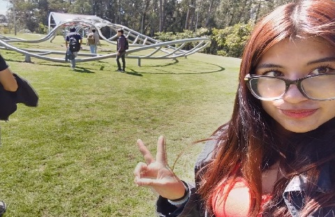
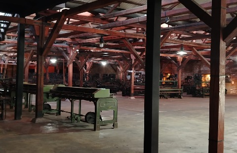
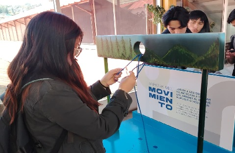
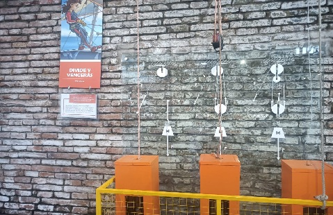
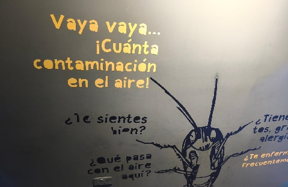
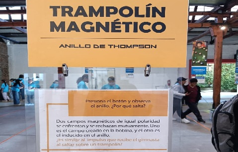
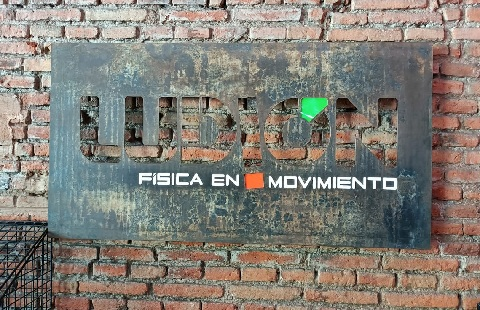
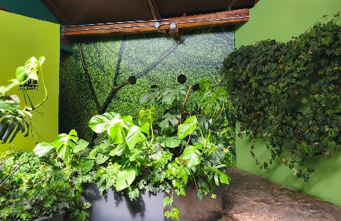
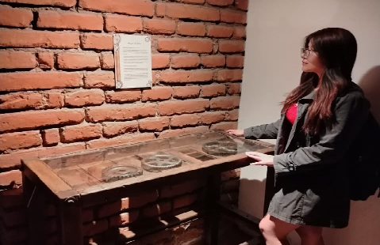

Aprender más allá del aula

La educación es un proceso que se desarrolla no solamente dentro de las aulas, sino también mediante experiencias que permiten al estudiante relacionarse con su entorno, experimentar y construir nuevos conocimientos. Bajo esta perspectiva, la visita al Museo Interactivo de Ciencias (MIC) permitió comprender que el aprendizaje puede surgir desde espacios diferentes, donde la observación, la interacción y la reflexión tienen un papel fundamental.
El Museo Interactivo de Ciencias, ubicado en el barrio de Chimbacalle en Quito, representa un espacio donde la ciencia, la historia y la sociedad se encuentran. Sus instalaciones, anteriormente pertenecientes a la fábrica textil "La Industrial", conservan parte de la memoria industrial de la ciudad y actualmente funcionan como un ambiente educativo donde los visitantes pueden aprender mediante experiencias interactivas.
Durante el recorrido fue posible relacionar la experiencia vivida con diferentes teorías educativas estudiadas en la asignatura de Didáctica, especialmente aquellas relacionadas con el aprendizaje como una construcción social, cultural y activa. A través de las propuestas de Lev Vygotsky, Alexei Leontiev, Paulo Freire, Anton Makarenko, Enrique Dussel y Boaventura de Sousa Santos, se puede comprender que el conocimiento no se limita a recibir información, sino que se construye mediante la actividad, la interacción con otros y la relación con la realidad.
Esta visita permitió reconocer al museo como un espacio educativo donde la ciencia puede ser comprendida desde la experiencia, fortaleciendo el pensamiento crítico, la cooperación y la valoración del contexto histórico y social.
Historia del Museo Interactivo de Ciencias

De una fábrica textil a un espacio para aprender ciencia
El Museo Interactivo de Ciencias (MIC) se encuentra ubicado en las instalaciones de la antigua fábrica textil "La Industrial", un espacio que forma parte del patrimonio histórico de Quito. Durante varios años, esta fábrica representó una importante actividad económica e industrial para la ciudad, siendo un lugar donde cientos de trabajadores desarrollaron sus actividades relacionadas con la producción textil.
Actualmente, este espacio ha sido transformado en un museo dedicado a la divulgación científica y educativa. La conservación de elementos históricos como maquinaria, herramientas y espacios pertenecientes a la antigua fábrica permite que los visitantes conozcan no solamente conceptos científicos, sino también la historia de las personas que formaron parte de este lugar.
La transformación de una fábrica en un museo demuestra cómo un espacio puede adquirir nuevos significados a través del tiempo. Lo que antes fue un lugar de producción industrial, hoy se convierte en un ambiente de aprendizaje donde niños, jóvenes y adultos pueden acercarse a la ciencia mediante la experimentación y la curiosidad.
La visita al Museo de Sitio permitió comprender que la educación también está relacionada con la memoria histórica, ya que conocer nuestro pasado ayuda a construir una identidad y comprender cómo la sociedad ha evolucionado.
Experiencia durante el recorrido

Durante la visita al Museo Interactivo de Ciencias fue posible observar que el aprendizaje ocurre de manera más significativa cuando existe una participación activa del estudiante. Los diferentes espacios del museo permitieron experimentar, manipular elementos y relacionar los fenómenos científicos con situaciones presentes en la vida cotidiana.
A diferencia de una enseñanza basada únicamente en la transmisión de información, el museo propone una experiencia donde el visitante participa directamente en la construcción del conocimiento. Cada experimento genera preguntas, despierta curiosidad y permite comprender conceptos científicos mediante la práctica.
Además, la visita permitió fortalecer la interacción entre compañeros, ya que muchas actividades fueron desarrolladas mediante el diálogo, el intercambio de ideas y la colaboración. Esto demuestra que aprender es también un proceso social donde las personas construyen conocimientos junto a otros.
Desde una perspectiva didáctica, el MIC representa un ambiente educativo donde el estudiante deja de ser un receptor pasivo y se convierte en protagonista de su propio aprendizaje.
Las teorías que explican nuestra experiencia
⚙️ Leontiev: La Teoría de la Actividad

El aprendizaje mediante la interacción con el entorno
La teoría de la actividad propuesta por Alexei Leontiev permite comprender que el aprendizaje se desarrolla mediante la participación activa del sujeto en una determinada actividad. Para este autor, el conocimiento no aparece de manera aislada, sino que se construye mediante la relación entre la persona, los objetos y el contexto donde se desarrolla la acción.
Durante la visita al Museo Interactivo de Ciencias esta teoría se pudo evidenciar mediante los diferentes módulos interactivos y experimentos científicos. Al manipular los elementos del museo, observar sus efectos y buscar explicaciones, los estudiantes participaron activamente en un proceso de construcción del conocimiento.
La experiencia permitió comprender que aprender ciencia no consiste únicamente en memorizar conceptos, sino en experimentar, analizar y descubrir cómo funcionan los fenómenos que nos rodean.
El museo se convirtió en un espacio donde la actividad práctica permitió transformar la información en conocimiento significativo.
Aplicación de la teoría:
La teoría de Leontiev se refleja porque el aprendizaje surgió a partir de la acción. La interacción con los experimentos permitió que cada estudiante construyera su comprensión mediante la experiencia directa.
🧠 Paulo Freire: Pedagogía Crítica

Aprender mediante la reflexión y el diálogo
Paulo Freire plantea que la educación debe permitir que los estudiantes desarrollen una conciencia crítica sobre la realidad que los rodea. Para este autor, aprender no significa únicamente recibir información, sino reflexionar sobre ella y relacionarla con las experiencias personales y sociales.
La visita al Museo Interactivo de Ciencias se relaciona con esta teoría porque cada exposición permitió cuestionar, analizar y comprender la importancia de la ciencia en nuestra vida cotidiana.
El museo no presentó la ciencia como un conocimiento distante, sino como una herramienta que ayuda a interpretar nuestro entorno. A través de la observación y la reflexión, fue posible relacionar los contenidos científicos con situaciones reales.
La experiencia demuestra que los espacios educativos pueden generar aprendizajes transformadores cuando permiten la participación activa y el pensamiento crítico.
Aplicación de la teoría:
La teoría de Freire se evidencia porque la visita no se limitó a observar información, sino que permitió reflexionar sobre la importancia del conocimiento científico y su relación con la sociedad.
👥 Makarenko: Educación Colectiva

El aprendizaje construido junto a otros
Anton Makarenko destacó la importancia del trabajo colectivo dentro de la educación. Para este autor, la formación de una persona ocurre dentro de una comunidad donde existen cooperación, responsabilidad y participación.
Durante la visita al Museo Interactivo de Ciencias fue importante la interacción con los compañeros, ya que muchas experiencias fueron enriquecidas mediante conversaciones, intercambio de opiniones y ayuda mutua.
El aprendizaje no fue una actividad individual, sino una experiencia compartida donde cada integrante aportó sus ideas y conocimientos.
El recorrido permitió comprender que la educación también implica aprender a convivir, colaborar y construir objetivos comunes.
Aplicación de la teoría:
La teoría de Makarenko se refleja en el trabajo grupal realizado durante la visita, donde la cooperación permitió fortalecer la comprensión de los contenidos observados.
🌎 Enrique Dussel: Filosofía de la Liberación

Reconocer nuestra historia y nuestro contexto
Enrique Dussel propone una educación que considere la realidad histórica, social y cultural de los pueblos. Su pensamiento busca valorar aquellos conocimientos y experiencias que forman parte de nuestra identidad.
La visita al Museo Interactivo de Ciencias permitió relacionar esta perspectiva mediante el reconocimiento de la antigua fábrica textil "La Industrial" como parte de la historia de Quito.
Conocer este espacio permitió comprender que detrás de cada construcción existen personas, historias y procesos sociales que merecen ser reconocidos.
El museo no solamente enseña ciencia, sino que también conserva memoria, mostrando cómo los espacios pueden representar la identidad de una sociedad.
Aplicación de la teoría:
La teoría de Dussel se evidencia porque la visita permitió valorar nuestro patrimonio histórico y comprender la importancia de reconocer nuestra propia realidad.
🌱 Boaventura: Ecología de Saberes

La relación entre diferentes formas de conocimiento
Boaventura de Sousa Santos plantea que existen diferentes maneras de construir conocimiento y que estas deben dialogar entre sí. Su propuesta destaca la importancia de reconocer saberes científicos, culturales y sociales.
El Museo Interactivo de Ciencias representa esta idea porque combina conocimientos científicos con la historia, la cultura y las experiencias humanas.
La ciencia presentada en el museo no aparece separada de la sociedad, sino relacionada con las necesidades, problemas y experiencias de las personas.
La visita permitió comprender que aprender implica reconocer diferentes perspectivas y valorar la diversidad del conocimiento.
Aplicación de la teoría:
La teoría de Boaventura se refleja porque el museo permite unir ciencia, historia y sociedad, demostrando que existen diferentes formas de comprender la realidad.
Reflexión final

La visita al Museo Interactivo de Ciencias permitió comprender que el aprendizaje puede desarrollarse en diferentes espacios y no únicamente dentro del aula. La experiencia demostró que la interacción, la experimentación y la colaboración son elementos fundamentales para construir conocimientos significativos.
A través de las teorías estudiadas fue posible analizar la visita desde diferentes perspectivas. Leontiev permitió comprender la importancia de la actividad; Freire destacó la reflexión crítica; Makarenko mostró el valor del trabajo colectivo; Dussel permitió reconocer la importancia de nuestra historia y Boaventura de Sousa Santos ayudó a valorar la diversidad de conocimientos.
Esta experiencia fortaleció la idea de que la educación debe estar relacionada con la realidad, permitiendo que los estudiantes sean participantes activos en su aprendizaje y no solamente receptores de información.
El Museo Interactivo de Ciencias se convirtió en un espacio donde la ciencia, la historia y la educación se integran para generar nuevas formas de comprender el mundo.